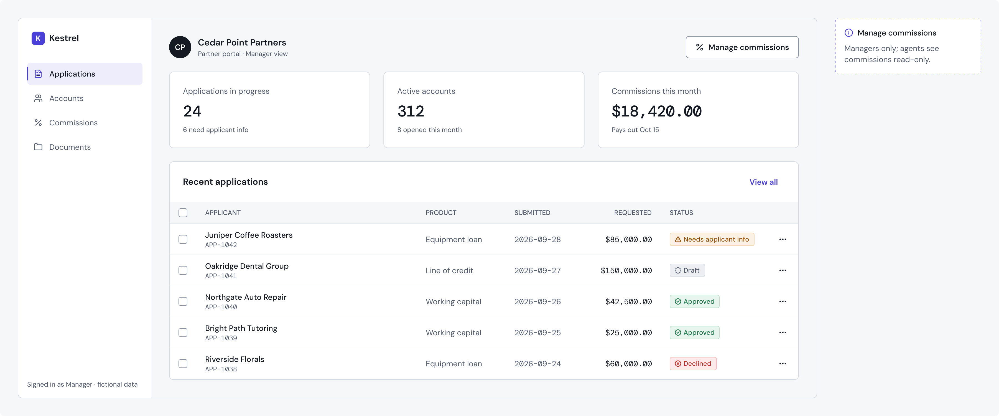
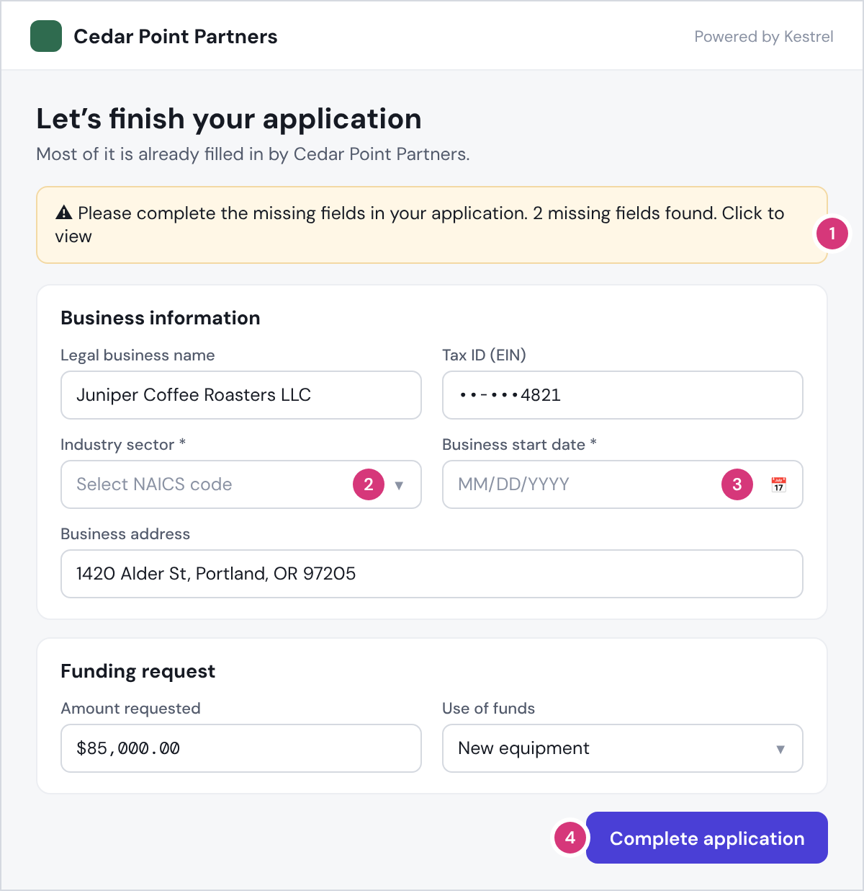
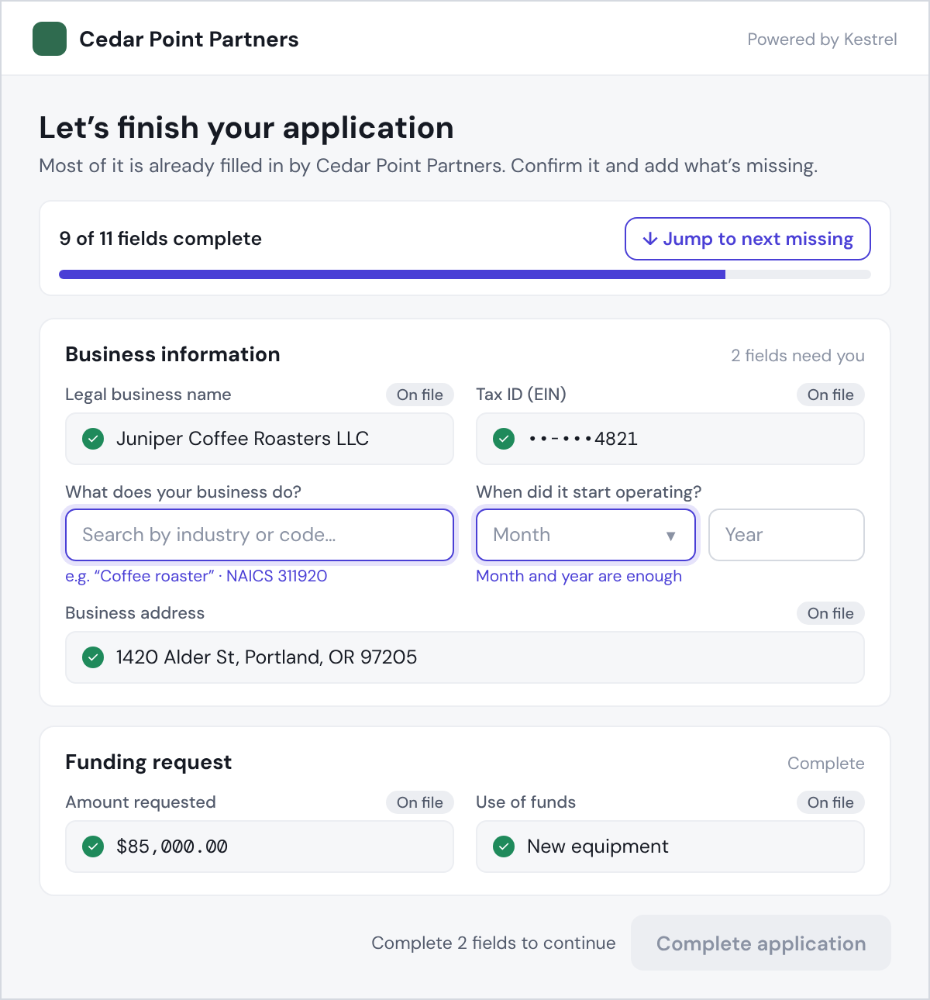
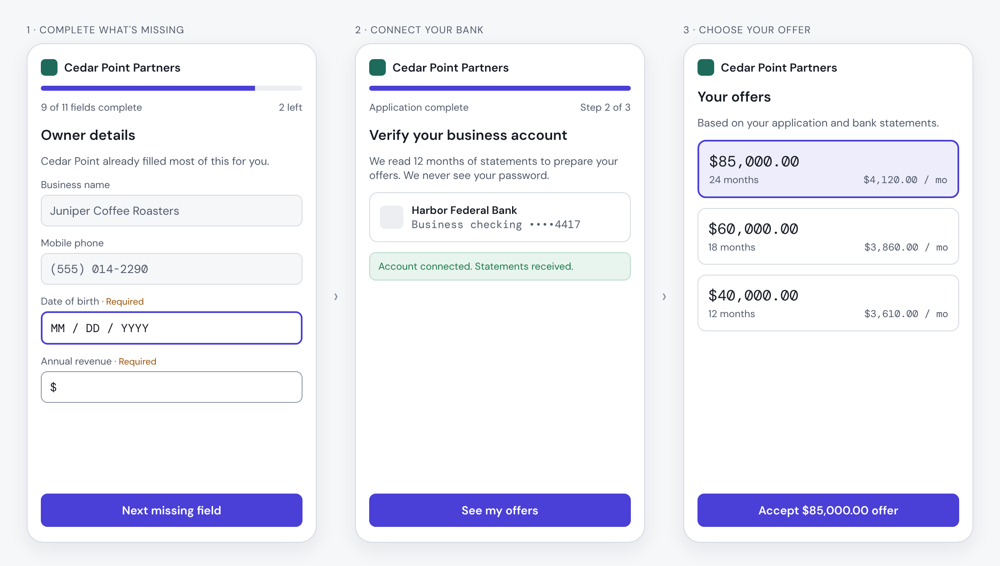
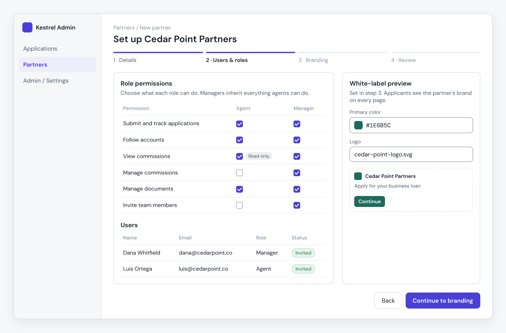

A portal for 250+ lending partners
A role-based portal, an internal admin and a redesigned application flow took partner onboarding from 1–2 days to about 4 hours, and cut form abandonment from ~30% to ~17%.
- Role
- Product design, co-led with my teammate
- Team
- 2 designers, engineering, Director of Product
- Timeline
- 2023–2025
- Users
- 250+ partners, including US Bank and SoFi, and their applicants
Visuals are reconstructions built with Kestrel UI, a fictional brand with fictional data. They show the principles of the work, not the company’s actual screens.


The problem
Quantum ran small-business lending for 250+ partners such as US Bank and SoFi. Growth ran into three problems:
Setting up a partner took days and depended on engineering.
Found in: definition sessions with operationsPartners chased application status by email, with no view of their commissions.
Found in: sessions with partners and operationsAbout 3 in 10 applicants abandoned the pre-filled form.
Found in: session recordings and analytics (Hotjar and Datadog)Who we designed for
Personas built from research with all three groups, documented in the company’s Confluence.
Quantum operations or partnerships agent. Works in the internal admin.
Goal: onboard a partner quickly and without errors.
Frustration: scattered setup, permission errors found late, depending on engineering.
A bank or fintech lead who oversees a team of agents.
Goal: see their pipeline and control what each agent sees.
Frustration: chasing status by email, with no view of commissions.
A US small-business owner, often on a phone and short on time.
Goal: finish fast and understand what’s missing.
Frustration: a half-filled form and technical language.
Outcome
to onboard a partner (approx.)
form abandonment (approx.)
partners on the portal
standout design win, per the Director of Product
Approximate figures observed in production with Hotjar and Datadog, not from a formal study.
- Application tracking moved from email into the portal, and fewer applications came back for missing data.
- Consistent positive feedback from US Bank, and recognition for the design team in bi-weekly demos.
My role
I co-designed the experience with my design teammate; we split the work evenly and refined it together. My part covered research and definition sessions with all three groups, the flows and information architecture of the admin, the portal and the application flow, and the role and permission model. I presented in bi-weekly demos, worked with compliance on wording, used Hotjar and Datadog to find where applicants dropped off, and reviewed each release as visual approver in Chromatic.
Why these challenges first
An Eisenhower matrix adapted to urgency and importance for the business.
Partner onboarding depended on engineering
Form abandonment (~30%)
Roles and permissions per partner
Clarity vs. compliance
One-off partner requests, handled as tickets inside the portal
Developer tools and advanced white-label customization (in QA when I left)
Key challenges
The pre-filled form was abandoned
~30% → ~17% abandonment- DiscoverHotjar and Datadog: applicants couldn’t find the few fields only they could fill in.
- Define“Do now”: every abandoned form was an application lost for the partner.
- DevelopA jump to the next missing field, visible progress, and a one-pass flow with Plaid.
- DeliverAbandonment from ~30% to ~17% (approx.), measured again in Hotjar and Datadog.
Partner onboarding depended on engineering
1–2 days → 4 hours- DiscoverSessions with operations: scattered setup and permission errors that surfaced late.
- DefineLet operations onboard a partner on their own, in a guided flow with no technical changes.
- DevelopAn internal admin to set up the partner, users, roles and white-label branding.
- DeliverOnboarding went from 1–2 days to about 4 hours (approx.).
One portal, users with different permissions
One base for 250+ partners- DiscoverSessions with partners: agents and managers needed to see different things, especially commissions.
- DefineOne system with roles, not separate products per type of user.
- DevelopManagers manage commissions; agents see them read-only. Permissions per partner.
- Deliver250+ partners running on the same base.
Clarity versus compliance
Clearer, same compliance- DiscoverSession recordings: technical language, but much of the wording was required by compliance.
- DefineChange only what wasn’t mandatory wording.
- DevelopWe worked with compliance: removed jargon and reordered fields into a logical sequence.
- DeliverClearer questions without losing compliance.
Each challenge runs through the double diamond: Discover and Define in cobalt, Develop and Deliver in magenta.


Before: what applicants saw
Session recordings and analytics showed the same pattern on desktop and mobile:
- The notice didn’t read as an action. “Click to view” had the same weight and color as the text, so people didn’t see it as a link.
- Industry by NAICS code. Applicants don’t know their business’s code; it was one of the fields where they got stuck most.
- A calendar for a date that only needs month and year. The other field with the most friction.
- A button with no context. No count of pending fields and no progress; on desktop the notice went unnoticed.
Pre-filled and missing fields also looked the same.


After: same data, a different experience
- Explicit progress. “9 of 11” and a bar remove the uncertainty; “Jump to next missing” goes straight to the pending field.
- Pre-filled data stands apart. A check and an “On file” tag: applicants confirm instead of reviewing everything again.
- What’s missing stands out. Indigo border and focus, with a count per section (“2 fields need you”).
- Industry in the applicant’s words. Search by name; the NAICS code is secondary.
- Month and year, no calendar. Ask only for the detail that’s needed.
- A disabled button that says why. “Complete 2 fields to continue” explains what’s left.
From form to offer in one session


1 · Complete: only the missing fields are asked; the rest comes from the partner.
2 · Connect the bank: Plaid inside the same flow, with no detour to another screen.
3 · Choose an offer: the applicant finishes in the same session, without waiting for another email.
One system, each partner’s brand


- Each partner sets its brand (primary color and logo), and applicants see it throughout the flow.
- I coordinated the design system’s color and brand tokens with engineering, so white-label changed the brand without breaking components or contrast.
- Agents and managers share one interface; permissions decide what each one sees.
- Developer tools for deeper brand and experience customization were in QA when I left.
The portal ran on the design system I built from scratch. How it was built, shipped and kept up to date is in the first case study.
How I’d validate it
Proposal, not run in the project
We validated with research, bi-weekly demos and analytics, but not with formal usability tests. This is how I’d run them:
5 participants per profile, following Nielsen: with 5 users most usability problems show up.
Unmoderated tests with the Figma prototype: mobile for applicants, desktop for partners.
Complete a pre-filled application, find an application’s status, onboard a partner.
Success rate, time per task, drop-off by field, and SEQ (ease from 1 to 7 after each task).
Then I’d compare against Hotjar and Datadog in production, to confirm what tests show also happens with real users.
What I learned
Session recordings revealed a problem nobody had reported. Watching real use after launch mattered as much as the initial research.
What I’d do differently
Measure drop-off by field from day one, and add unmoderated usability tests before every major release.
Start again